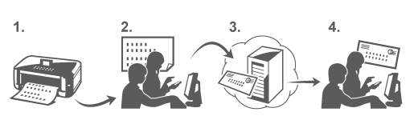

［メールからプリント］を使用すると、パソコンやスマートフォンに保存した写真や文書をメールに添付して送るだけでかんたんに印刷することができます。
旅行先や外出先から手軽に印刷したり、あらかじめ登録しておけば、家族や友人が印刷することもできます。
本サービスに対応したキヤノン製プリンターで使用することができます。
お使いの環境を確認する
はじめに、お使いの環境を確認してください。
-
ネットワーク環境
インターネットに接続されているLAN環境に、本製品が接続されている必要があります。
-
インターネットへの接続料金はお客様のご負担となります。
-
お住まいの国や地域によっては、この機能をご利用になれない場合があります。
-
プリンター本体のソフトウェア（ファームウェア）バージョン
プリンターのファームウェアバージョンがVer.2.000未満の場合は、ファームウェアをアップデートする必要があります。
アップデートの詳細な手順は「アップデート手順」を参照してください。
［メールからプリント］を利用するための準備
［メールからプリント］を利用するには、プリンター所有者の情報を入力して、プリンターを登録する必要があります。
-
プリンター登録用URLとPINコードを印刷
-
印刷されたURLにアクセスして、所有者のメールアドレスなど必要な情報を入力
-
入力したメールアドレス宛にメールが届いたことを確認
-
メールにあるURLへアクセスして登録を行い、プリンター登録を完了
-
登録完了時の画面に表示されたメールアドレスが、［メールからプリント］専用のプリント用メールアドレスとなります。
パソコンやスマートフォンから印刷する
-
印刷したいファイルを用意
印刷に対応しているファイル形式、ファイル数、サイズは以下の通りです。
対応ファイル形式
-
Adobe PDFファイル
-
JPEGファイル
-
メールに添付されたファイルのみ印刷可能です。メール本文は印刷されません。
-
Adobe PDFファイルの暗号化、パスワード保護、印刷不可に設定されたものは印刷できません。
-
ファイルが圧縮されて添付されていた場合は印刷できません。
-
Adobe PDFファイル、JPEGファイル以外のファイルは印刷できません。
対応ファイル数とサイズ
-
添付ファイルは最大10ファイルまで印刷可能
-
添付ファイルを含むメールの最大サイズは5MBまで
-
メールのサイズは、メール本文やヘッダーなどを含む送信ファイル全体のサイズで判断します。そのため、添付ファイルのサイズが5MB未満でも印刷できない場合があります。
-
添付したJPEGファイルのサイズが10KB未満の場合は印刷できません。
-
-
お使いのパソコン、またはスマートフォンから印刷したいファイルをメールに添付してプリント用メールアドレスへメールを送信
プリント用アドレスは、プリンターの操作パネルの
 ［Webサービス］→［Webサービス設定］→［クラウド設定］→［メールからプリント設定］→［プリント用アドレスの確認］からも確認できます。
［Webサービス］→［Webサービス設定］→［クラウド設定］→［メールからプリント設定］→［プリント用アドレスの確認］からも確認できます。-
メンテナンスを行っている期間は、サービスを利用することができません。
-
2人以上でサービスを利用する
プリンター所有者以外のユーザーをメンバー登録することによって、2人以上で利用することができます。
-
プリンターの所有者がお使いのパソコン、またはスマートフォンからサービスのログインURL（https://pr.mp.c-ij.com/po）へアクセスして、ログイン
-
メンバーを追加したいプリンター名を選択して、［メンバー設定］→［追加］から、追加するメンバーのメールアドレスを入力し、［登録］をクリック
登録したメンバーのメールアドレスへ、メンバー登録ページのURLが通知されます。
-
登録したメンバーが、メールに記載されているURLにアクセスして、登録を完了
登録したメールアドレスからサービスを利用することができます。
-
メンバーは最大500人まで登録する事ができます。
印刷ができない場合
印刷ができない場合は、以下を確認してください。
-
プリンターの電源が入っていることを確認してください。
プリンターの電源が入っている場合は、電源を入れ直して問題が解決するか確認してください。 -
プリンターがネットワークに接続されていることを確認してください。
-
LAN接続されていて、LAN環境がインターネットに接続されているか確認してください。
-
プリンターの操作パネルに何もエラーメッセージが表示されていないことを確認してください。
トラブルが解決しない場合は、パソコンからプリンタードライバーを使用して印刷を行い、プリンターで正常に印刷できるか確認してください。
印刷できない場合は、プリンターに同梱されている電子マニュアル（取扱説明書）を参照してください。 -
メールに添付したファイルがAdobe PDFファイルまたはJPEGファイルであることを確認してください。
-
送信先のメールアドレスに誤りがないか、プリンターの操作パネルの
［Webサービス］→［Webサービス設定］→［クラウド設定］→［メールからプリント設定］→［プリント用アドレスの確認］から確認してください。 -
本サービスで使用するユーザーのメールアドレスが登録されていることを確認してください。
確認する場合は、プリンターの所有者がサービスのログインURL（https://pr.mp.c-ij.com/po）へログインして確認してください。 -
［印刷状況］画面の［印刷履歴画面へ］ボタンをクリックして、送信したジョブの履歴を確認してください。エラーの詳細を確認することができます。
確認する場合は、プリンターの所有者がサービスのログインURL（https://pr.mp.c-ij.com/po）へログインして確認してください。
-
無線LAN接続の場合、プリンターの電源が入ってから通信できるようになるまで、数分かかる可能性があります。お使いのプリンターが無線ネットワークに接続されていることを確認してから、印刷を試してください。
サービスの登録・削除ができない場合
登録ができない場合
-
プリンターの操作パネルに「「メールからプリント」への登録に失敗しました」というメッセージが表示された場合は、［メールからプリント］への登録が時間内に完了しなかった可能性があります。 ［OK］を選択してエラーを解除したあとに、もう一度最初からやり直してください。
-
プリンターのファームウェアバージョンがアップデートされていることを確認してください。
登録を完了するためのURLがメールで送られてこない場合
-
間違ったメールアドレスを入力した可能性があります。約30分後にプリンターの操作パネルを操作して、プリンター登録用URLとPINコードの印刷を行い、最初からやり直してください。
削除ができない場合
-
プリンターの操作パネルに「「メールからプリント」に接続できなかったため、プリンターの情報のみを削除しました」というメッセージが表示された場合は、プリンターに記憶した［メールからプリント］からの情報を削除したものの、サービス側の登録情報は削除できなかった可能性があります。
［OK］を選択してエラーを解除したあとに、サービスのログインURL（https://pr.mp.c-ij.com/po）にアクセスして削除してください。 -
サービス側の登録情報を削除したものの、プリンターに記憶した［メールからプリント］の情報を削除できなかった場合は、
［Webサービス］→［Webサービス設定］→［クラウド設定］→［メールからプリント設定］→［登録済みプリンターの解除］から登録情報を削除してください。
修理に出したあと、印刷ができなくなった場合
プリンター本体とプリンター所有者の再登録
-
プリンターを修理すると登録した情報がすべて削除され、［メールからプリント］が使用できなくなります。
再度、本サービスを利用する場合は、プリンター本体とプリンター所有者を登録し直す必要があります。
再登録の手順については「［メールからプリント］を利用するための準備」を参照してください。
所有者以外のユーザーをメンバー登録していた場合も、こちらから登録し直してください。
商標について
-
Windowsは、米国Microsoft Corporationの米国およびその他の国における登録商標または商標です。
-
Windows Vistaは、米国Microsoft Corporationの米国およびその他の国における登録商標または商標です。
-
Mac OS、Bonjour、iPad、iPhone、iPod touchおよびSafariは、米国および他の国々で登録されたApple Inc.の商標です。AirPrintおよびAirPrintロゴは、Apple Inc.の商標です。
-
IOSは、米国および他の国々で登録されたCiscoの商標であり、ライセンスに基づいて使用しています。
-
その他、本文中の社名や商品名は、各社の登録商標または商標です。